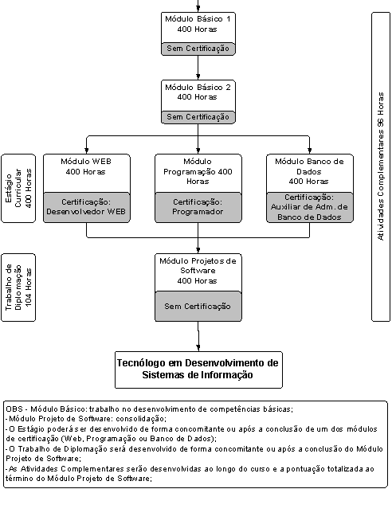

O Curso de Tecnologia em Desenvolvimento de Sistemas do CEFET-PR / Unidade de Cornélio Procópio provê uma formação que capacita o profissional para a automação dos sistemas de informação das organizações, com vistas a atender as necessidades do mercado de trabalho corrente. As necessidades que podem ser atendidas abrangem o desenvolvimento, implantação e gerenciamento de sistemas e infra-estrutura para uso em processos organizacionais, nas variadas necessidades expostas pelo mercado.
O curso deve prover uma formação que capacite o profissional para a solução de problemas do mundo real, por meio da construção de modelos computacionais e de sua implementação. É dever do curso formar um profissional na área de informática que possua as seguintes características:
* Conhecimento e domínio do processo de projeto para construir a solução de problemas de base científica;
* Modelar e especificar problemas do mundo real, com uso de técnicas apresentadas no curso;
* Implantar sistemas de computação;
* Validar e transmitir a solução de um problema de forma efetiva e contextualizada ao problema original;
* Analisar e assimilar sistemas técnicos, científicos e administrativos transformando-os em algoritmos eficientes e eficazes capazes, desta forma, de resolver os problemas do dia-a-dia dos usuários;
* Capacidade para aplicar seus conhecimentos de forma independente e inovadora, acompanhando a evolução do setor e contribuindo na busca de soluções nas diferentes áreas aplicadas;
* Formação humanística permitindo a compreensão do mundo e da sociedade, uma formação de negócios, permitindo uma visão dinâmica organizacional e estimulando o trabalho em grupo, desenvolvendo suas habilidades de comunicação.
O tecnólogo egresso deve ter condições de assumir um papel de agente transformador do mercado, sendo capaz de analisar as linguagens de computador e os códigos de comunicação entre o usuário e a máquina, podendo empreender ou assumir chefia ou a organização de Centro de Processamento de Dados (CPD) e, também, trabalhar em tarefas específicas, como documentação de sistemas e elaboração de manuais, tendo como desafio provocar mudanças através da agregação de novas tecnologias na solução dos problemas e propiciando novos tipos de atividades, agregando:
* Domínio de novas ferramentas e implementação de sistemas visando melhores condições de trabalho e de vida;
* Conhecimento e emprego de modelos associados ao uso de ferramentas do estado-da-arte;
* Pesquisa visando novos conhecimentos e produtos;
* Uma visão humanística consistente e crítica do impacto de sua atuação profissional na sociedade.
O quadro a seguir indica as competências profissionais classificadas por postos de trabalho identificados na região. O objetivo do curso é o desenvolvimento dessas competências. As competências C, E, H e I não correspondem a algum posto específico, mas compõem o perfil do Tecnólogo.
A forma de acesso aos Cursos Superiores de Tecnologia do Sistema CEFET-PR é por processo seletivo, obedecendo ao disposto na Constituição Federal, em seu Artigo 44: "A educação superior abrangerá os seguintes cursos e programas: de graduação, abertos a candidatos que tenham concluído o ensino médio ou equivalente e tenham sido classificados em processo seletivo (vestibular)".
As provas limitam-se aos conteúdos integrantes do Núcleo Comum do Ensino Médio e destinam-se a aferir a formação recebida pelo candidato e sua aptidão para estudos superiores. São realizadas 3 provas assim agrupadas:
- Português, Redação, Língua Estrangeira Moderna e Biologia;
- Física, Geografia e Química;
- Matemática e História.
O Curso Superior de Tecnologia em Desenvolvimento de Sistemas de Informação do CEFET-PR - Unidade de Cornélio Procópio, será composto por seis ( 06 ) Períodos de um semestre letivo e trabalhado através de Módulos de Ensino, que propiciarão quatro ( 03 ) Certificações de Qualificação Profissional de Nível Tecnológico conforme o disposto no artigo 5º da Resolução CNE/CP3 de 18/12/2002.
O Período é o intervalo de tempo de um semestre de 100 dias letivos de atividade de ensino, contendo 400h para que as Unidades Curriculares do módulo de ensino possam ser trabalhadas a desenvolver competências.
O Módulo de Ensino é o conjunto de unidades curriculares em que se desenvolverão as competências e avaliações através de estratégias pedagógicas.
As Unidades Curriculares são o conjunto de habilidades que serão desenvolvidas ao longo de um período de um semestre letivo.
A estrutura curricular dos Cursos Superiores de tecnologia do CEFET-PR obedecem ao disposto na Lei n.o 9.394, de 20/12/96, no Decreto n.o 2.208, de 17/04/97, no Parecer n.o 436/01, de 02/04/01, na Resolução CNE/CP 3, nas Diretrizes Curriculares Nacionais Gerais para a Educação Profissional de Nível Tecnológico - DCN, Parecer n.o 29/02, 03/12/02, e nas resoluções específicas, para cada curso, expedidas pelos órgãos competentes.
A estrutura curricular do Curso Superior de Tecnologia em Desenvolvimento de Sistemas de Informação do CEFET-PR - Unidade de Cornélio Procópio, tem sua essência referenciada na pesquisa de mercado identificando a demanda para a qualificação profissional do Estado do Paraná.
Para dar atendimento à demanda do mercado de um profissional com um perfil diferenciado, não só em tecnologia, mas também voltado para o desenvolvimento social, a organização do Curso Superior de Tecnologia em Desenvolvimento de Sistemas de Informação apresenta bases científicas e de gestão de nível superior dimensionadas e direcionada a terminalidade da formação do tecnólogos
Organização Curricular
Os objetivos, ementas e bibliografia das unidades curriculares estão descritos conforme a seguir.
O fluxograma do Curso Superior de Tecnologia em Curso Superior de Tecnologia em Desenvolvimento de Sistemas de Informação encontra-se organizado em seis módulos, mais Estágio Curricular, Atividades Complementares e Trabalho de Diplomação.
Os módulos Básico - 1 e Básico - 2 são obrigatórios para que o estudante possa prosseguir nos seus estudos. Após concluí-los, ele terá três alternativas de percurso: Módulo de Desenvolvimento Para a Web, Módulo de Programação e Módulo Banco de Dados. Estes módulos oferecem, respectivamente, as certificações parciais: Desenvolvedor para Web, Programador, e Auxiliar de Administração de Banco de Dados.
Após a conclusão do Módulo Básico o aluno poderá realizar o Estágio Curricular. Concomitantemente ao Módulo Projeto de Software o aluno poderá iniciar o Trabalho de Diplomação.
Durante todo o curso caberá ao estudante participar des Atividades Complementares que privilegiem a construção de comportamentos sociais, humanos e profissionais adicionais às atividades acadêmicas tradicionais, devendo integralizar 70 (setenta) pontos, no mínimo, relativos à sua participação ao longo do Curso. Esta atividade visa enriquecer o processo ensino-aprendizagem; complementar a formação social, humana e profissional do estudante; desenvolver atividades de cunho comunitário e de interesse coletivo; realizar atividades de assistência acadêmica e de iniciação científica e tecnológica; participar de atividades esportivas, artísticas e culturais, além de intercâmbios com instituições congêneres. As pontuações e as demais regulamentações referentes às Atividades Complementares estarão dispostos em regulamento próprio aprovado pelo Conselho de Ensino do CEFET-PR.
Após cumprir todos os módulos, o Estágio Curricular, as Atividades Complementares e o Trabalho de Diplomação, o estudante obterá o diploma de graduação como Tecnólogo em Desenvolvimento de Sistemas de Informação.
Com relação às unidades curriculares que compõem cada módulo, e em conformidade com parágrafo segundo, Art. 47, do Capítulo IV que trata da Educação Superior, da Lei no 9.394, de 20 de dezembro de 1996, o aluno que julgar possuir extraordinário conhecimento em disciplinas do curso, demonstrados por meio de evidências objetivas, poderá ter abreviada a duração do mesmo mediante requerimento e execução de exame de suficiência na unidade curricular requerida, a ser aplicado por banca examinadora especial designada pela Gerência de Ensino e Pesquisa.
Curso superior de tecnologia em desenvolvimento de sistemas de informação
fluxograma curricular aprovado pela comissão de especialistas mec/semtec.

a. Distribuição da Carga Horária e Unidades Curriculares por Módulos
Abaixo estão especificadas as unidades curriculares contidas em cada módulo, bem como a distribuição da carga horária semanal e semestral, as quais estão descritas em horas-relógio, conforme estabelece o Parecer CNE/CES Nº 575 de 04/04/2001.
Os critérios de avaliação do rendimento do aluno estão estabelecidos no Regulamento da Organização Didático-Pedagógica dos Cursos Superiores de Tecnologia do Sistema CEFET-PR, que abrange o seguinte:
* Verificação de Freqüência: é obrigatória a presença do discente nos ambientes em que se desenvolve o processo ensino-aprendizagem, no mínimo, em 75% (setenta e cinco por cento) em cada unidade curricular do Módulo de Ensino ou trabalho acadêmico. No decorrer do processo serão disponibilizados mecanismos para que o aluno possa construir gradativamente as competências, para efeito de verificação de freqüência não há abono de faltas.
* Avaliação de Aproveitamento Acadêmico: o discente será promovido no Módulo após ter construído todas as competências. A avaliação é bastante flexível e composto por um leque muito amplo de oportunidades. Assim, são propostas provas formais dos tipos objetiva, dissertativa, oral e prática. São também propostas elaborações e apresentações de relatórios, projetos, palestras, seminários e outras dinâmicas convenientes a cada conteúdo que se procura explorar.
Para cada um desses itens e de outros que por ventura venham a compor o elenco de parâmetros que permitem avaliar o desempenho acadêmico do educando, será atribuído um grau conceitual, de acordo com o "REGULAMENTO DA ORGANIZAÇÃO DIDÁTICO-PEDAGÓGICA DOS CURSOS SUPERIORES DE TECNOLOGIA DO CEFET-PR" regulamentado pelo Conselho de Ensino do CEFET-PR.
Aproveitamento Avaliação das Competências Adquiridas
De acordo com a LDB n.o 9.394, de 20/12/96, Artigo 41 e 47, Capítulo IV, do parecer n.o 2.208/97, do parecer n.o 436/01 e do Parecer n.o 776/97, "o aluno que julgar possuir extraordinário conhecimento em determinada competência, através de evidência(s) objetiva(s) poderá ter abreviada a duração desta, mediante execução de Exame de Suficiência, a ser aplicado por banca examinadora especial, indicada pela coordenação do curso".
O que deve ser avaliado para fins de prosseguimento de estudo é o efetivo desenvolvimento de competências previstas no perfil profissional de conclusão do curso. No caso de competências adquiridas em outros cursos superiores, a solicitação de aproveitamento será objeto de detalhada análise dos programas desenvolvidos, à luz do perfil profissional de conclusão do curso (CNE/CP: 29/02).
As Diretrizes para os CST do CEFET-PR, o Regulamento da Organização Didático Pedagógico dos CST do CEFET-PR, aprovados pelo Conselho Diretor do CEFET-PR - CODIR, definem os procedimentos para o aproveitamento e avaliação de competências adquiridas.
Regulamento das Atividades Complementares dos Cursos Superiores de Tecnologia do CEFET-PR
CAPÍTULO I - DAS FINALIDADES
Art. 1º. As Atividades Complementares, são consideradas disciplinas dos currículos dos Cursos Superiores de Tecnologia, sendo dispostas no Regulamento da Organização Didático-Pedagógica dos referidos Cursos.
§1º. As Atividades Complementares totalizam duas disciplinas, desenvolvidas, uma a cada ciclo, sendo a primeira possível de finalização até o 4º. Período e a segunda, até o 8º. Período.
§2º. O aluno poderá escolher entre os 11 (onze) Grupos das Atividades Complementares, constantes no Art. 9º. deste Regulamento , atividades que privilegiem a complementação da formação social, humana e profissional e enriqueçam seus conhecimentos, devendo atingir a pontuação necessária para a aprovação na disciplina.
Art. 2º. As Atividades Complementares têm a finalidade de enriquecer o processo de ensino-aprendizagem privilegiando:
I a complementação da formação social, humana e profissional;
atividades de cunho comunitário e de interesse coletivo;
atividades de assistência acadêmica e de iniciação científica e tecnológica; atividades esportivas e culturais, além de intercâmbios com instituições congêneres.
CAPÍTULO II - DO LOCAL DE REALIZAÇÃO
Art.3º. As Atividades Complementares poderão ser desenvolvidas no próprio CEFET-PR, promovidas pelos Departamentos de Ensino e Coordenações de Curso, ou por empresas, instituições públicas ou privadas, que propiciem a complementação da formação do aluno, assegurando o alcance dos objetivos previstos no Artigo 1º. deste Regulamento.
CAPITULO III - DAS COMPETÊNCIAS DA ENTIDADE CONCEDENTE DE ATIVIDADES COMPLEMENTARES
Art.4º. À Entidade Concedente de Atividades Complementares compete:
assegurar ao aluno todas as condições necessárias para a plena realização de suas atividades;
fornecer documentação comprobatória da participação efetiva do aluno especificando a carga horária, período de execução e descrevendo a atividade.
CAPÍTULO IV
DAS ATRIBUIÇÕES DOS ENVOLVIDOS NO PROCESSO DAS ATIVIDADES COMPLEMENTARES
SEÇÃO I - DO COORDENADOR DO CURSO
Art. 5º. Ao Coordenador de Curso compete:
Designar o Orientador das Atividades Complementares;
Supervisionar o desenvolvimento das Atividades Complementares;
Julgar a validação das atividades não previstas no Regulamento da Organização Didático-Pedagógica dos Cursos Superiores de Tecnologia do Sistema CEFET-PR e neste Regulamento.
SEÇÃO II - DO RIENTADOR
Art. 6º. Ao Orientador das Atividades Complementares compete:
analisar as documentações das Atividades Complementares apresentadas pelo aluno levando em consideração os objetivos estabelecidos no Artigo 1º. deste Regulamento;
avaliar e pontuar as Atividades Complementares desenvolvidas pelo aluno, de acordo com os critérios estabelecidos neste Regulamento, levando em consideração a documentação apresentada pelo aluno, em consonância com o Coordenador de Curso;
orientar o aluno quanto à pontuação das Atividades Complementares;
fixar e divulgar datas e horários, nos ambientes da Coordenação do Curso, para atendimento aos alunos e análise dos documentos comprobatórios;
controlar e registrar as atividades complementares desenvolvidas pelo aluno, bem como os procedimentos administrativos inerentes a essa atividade;
encaminhar semestralmente para o Setor de Registros Escolares do CEFET-PR, até a data de entrega da última nota parcial, o resultado parcial das pontuações obtidas pelo aluno;
participar das reuniões dos Orientadores das Atividades Complementares.
SEÇÃO III - DO ALUNO
Art. 7º. Ao aluno compete:
informar-se sobre as atividades oferecidas dentro ou fora do CEFET-PR;
inscrever-se nos programas e participar efetivamente destes;
providenciar a documentação que comprove a sua participação;
apresentar ao Orientador das Atividades Complementares, até a data limite fixada pelo mesmo, a documentação comprobatória das atividades realizadas;
acumular a pontuação mínima de 70 pontos, por ciclo, até o 4º e 8º períodos do Curso;
arquivar a documentação comprobatória das Atividades Complementares e apresentá-la sempre que solicitado.
CAPÍTULO V - DA AVALIAÇÃO DAS ATIVIDADES COMPLEMENTARES
Art. 8º. Na avaliação das Atividades Complementares desenvolvidas pelo aluno, serão considerados:
a compatibilidade das atividades desenvolvidas com os objetivos do curso em que o aluno estiver matriculado;
a qualidade na realização das atividades;
o total de horas dedicadas à atividade.
§.1º. Somente serão consideradas, para efeito de pontuação em Atividades Complementares, a participação em atividades desenvolvidas após a data de ingresso do aluno no ciclo em que estiver matriculado.
§.2º. Em caso de mudança de curso haverá reavaliação das atividades consideradas para a pontuação em Atividades Complementares conforme inciso I deste artigo 8º.
§.3º. A pontuação adquirida no 1º. Ciclo em Atividades Complementares não tem efeito cumulativo para o 2º. Ciclo.
Art.9º. Caberá ao aluno participar de atividades complementares que privilegiem a construção de comportamentos sociais humanos e profissionais adicionais às atividades acadêmicas tradicionais, devendo integralizar 70 (setenta) pontos, no mínimo, relativos à sua participação ao longo de cada ciclo nos seguintes grupos de atividades:
Atividades Esportivas;
Atividades Artísticas e Culturais;
Atividades Sociais e Políticas (beneficentes ou comunitárias);
Cursos Extraordinários (como ouvinte);
Eventos Técnico-científicos (palestras, congressos e seminários como ouvinte);
Cursos de Língua Estrangeira Moderna;
Cursos Extraordinários, Eventos Técnico-científicos (como professor/apresentador);
Artigos e/ou Projetos de Iniciação Científica e Tecnológica;
Exposições Técnico-científicas;
Estágios Opcionais e/ou Estágios Acadêmicos;
Visitas Técnicas.
§ 1º. A cada grupo de atividades previstas nos incisos do caput deste artigo poderão ser atribuídos no máximo 30 (trinta) pontos.
§ 2º. Os estágios previstos no item X deste artigo refere-se a estágios de característica opcional por parte do discente. O Estágio Curricular Obrigatório não poderá ser pontuado em Atividades Complementares, por já possuir crédito de carga horária e registro de nota próprios.
CAPÍTULO VI - DA PONTUAÇÃO DOS GRUPOS
Art.10 As Atividades Complementares serão avaliadas, segundo o critério de carga horária ou por participação efetiva nas atividades constantes no artigo 9º. deste Regulamento, segundo a pontuação abaixo:
Grupo I serão atribuídos até 10 pontos por semestre por participação nas atividades esportivas tais como: esportes individuais, natação, musculação, dança e outras, e esportes coletivos como basquetebol, handebol, voleibol, futsal e outros, em Instituições de acordo com o Art.3º. deste Regulamento.
Grupo II serão atribuídos até 10 pontos por semestre por participação nas atividades artísticas e culturais tais como: banda marcial, camerata de sopro, teatro, coral, radio-amadorismo e outras em Instituições de acordo com o Art. 3º. deste Regulamento.
Grupo III serão atribuídos até 10 pontos por participação efetiva; em Diretórios Acadêmicos, Entidades de Classe, Pastorais, Trabalho Voluntário, Atividades Comunitárias, CIPAS, Associações de Bairros e Brigadas de Incêndio.
Grupo IV será atribuído 1 ponto por hora por participação em minicursos e cursos da área específica de cada curso superior de tecnologia e de fundamento científico ou de gestão.
Grupo V será atribuído 1 ponto por hora pela participação em palestras técnicas, congressos e seminários.
Grupo VI serão atribuídos até 10 pontos por semestre para o aluno que obtiver freqüência e aprovação em cursos de língua estrangeira, internos ou externos à Instituição.
Grupo VII serão atribuídos até 5 pontos, por hora, por apresentação de palestras técnicas, seminários, minicursos, cursos da área específica, de cada Curso Superior de Tecnologia.
Grupo VIII serão atribuídos até 10 pontos a artigos publicados e até 30 pontos a Projeto de Iniciação Científica e Tecnológica, relacionados com o objetivo do Curso.
Grupo IX serão atribuídos até 20 pontos para cada participação como expositor em exposição técnica.
Grupo X será atribuído 0,5 ponto por hora de estágio e/ou trabalho profissional na área do curso.
Grupo XI serão atribuídos 5 pontos por visita técnica.
Art. 11. A pontuação atingida pelo aluno será convertida em nota no intervalo de 0,0 a 10,0, com apenas um algarismo significativo para efeito de registro acadêmico.
CAPÍTULO VII - DAS DISPOSIÇÕES GERAIS
Art. 12. Os casos omissos nesse Regulamento serão resolvidos pela Coordenação de Curso.
REGULAMENTO DA DISCIPLINA ESTÁGIO CURRICULAR SUPERVISIONADO DOS CURSOS SUPERIORESDE GRADUAÇÃO DO CEFET-PR
Capítulo I - DO ESTÁGIO E SUAS FINALIDADES
Art. 1º - O Estágio Curricular, baseado na lei nº 6.494, de 07/12/77, regulamentado pelo Decreto nº 87.497, de 18/08/82, no disposto nos Artigos 103 e 104 do Regimento Geral do CEFET-PR, obedecerá às presentes normas.
Art. 2º- O Estágio Supervisionado nos cursos Superiores de Graduação tem por finalidade:
a) complementação do ensino e da aprendizagem;
b) adaptação psicológica e social do estudante à sua futura atividade profissional;
c) treinamento do estudante para facilitar sua futura absorção pelo mercado de trabalho;
d) orientação do estudante na escolha de sua especialização profissional.
Art. 3º - Estágio Supervisionado é uma disciplina obrigatória dos Cursos Superiores de Graduação ministrados pelo CEFET-PR.
Capítulo II - DA FORMA DE REALIZAÇÃO
Art. 4º - Caberá ao CEFET-PR, através da Gerência de Relações Empresariais e Comunitárias e Gerência de Ensino e Pesquisa, prover meios necessários à obtenção e ao desenvolvimento pedagógico do estágio.
Art. 5º - O Estágio deverá ser realizado em empresas ou instituições públicas ou privadas, devidamente credenciadas com o CEFET-PR, e que apresentem condições de proporcionar experiências na área de formação do aluno.
Art. 6º - A participação do aluno em projetos de interesse para a Instituição ou sociedade, proposta pela Coordenação do Curso poderá ser considerada como Estágio.
Art. 7º - O Estágio será precedido da celebração do Termo de Compromisso entre o estudante e a empresa com a interveniência do CEFET-PR, através Gerência de Relações Empresariais e Comunitárias, exceto nos casos previstos no artigo 6º.
Art. 8º - O CEFET-PR providenciará um seguro de acidentes pessoais para cada aluno estagiário, caso a empresa não o faça.
Art. 9º - Os alunos que exercerem atividades profissionais em áreas correlatas a seu curso na condição de empregados devidamente registrados, autônomos ou empresários poderão considerar tais atividades como estágio.
§ 1º - A aceitação do exercício de atividades profissionais a que se refere o caput deste artigo, como estágio, dependerá de decisão do Coordenador do Curso respectivo que levará em consideração o tipo de atividade desenvolvida e o valor de sua contribuição para complementar a formação profissional.
§ 2º - Ao requerer o aproveitamento como estágio de suas atividades profissionais, o aluno deverá apresentar os seguintes documentos:
I. se empregado, cópia da parte da Carteira de Trabalho em que fique configurado seu vínculo empregatício e descrição, por parte de seu chefe imediato, das atividades que desenvolve;
II. se autônomo, comprovante de seu registro na Prefeitura Municipal nessa condição, comprovante de recolhimento do Imposto sobre Serviços correspondente ao mês da entrada do requerimento e descrição das atividades que executa;
III. se empresário, cópia do Contrato Social da empresa e descrição das atividades que executa.
Art. 10º - O Estágio não acarretará vínculo empregatício de qualquer natureza.
Art. 11 - A carga horária referente à disciplina Estágio não será computada para efeito da carga horária semanal máxima permitida para o aluno.
Capítulo III - DA MATRÍCULA NA DISCIPLINA
Art. 12 - A matrícula na disciplina Estágio ocorrerá de acordo com as regras estabelecidas nos currículos de cada curso.
Art. 13 - A matrícula na disciplina Estágio terá validade até o momento em que o aluno tenha sido avaliado, nos termos do Capítulo VI deste Regulamento, e tenha participado do Seminário de Estágio.
Capítulo IV - DA DURAÇÃO DO ESTÁGIO
Art. 14 - O Estágio terá duração mínima conforme previsto no currículo do curso, atendida a legislação vigente.
Art. 15 - O Estágio poderá ser desenvolvido em mais de uma empresa, desde que autorizado pelo Coordenador de Curso..Art. 16 - A complementação do estágio na mesma empresa ou em outra, após sua interrupção, somente poderá ocorrer após aprovação de novo Plano de Estágio e assinatura de novo Termo de Compromisso.
Art. 17 - O tempo previsto para o Estágio passará a ser contado a partir da aprovação pelo Coordenador do Curso do Plano de Estágio, elaborado em consonância com o Supervisor de Estágio e analisado pelo Professor-Orientador.
Art. 18 - O aluno que deixar de cumprir as atividades de Estágio nas datas previstas no Calendário Escolar e nas divulgadas em Edital pela Coordenação de Curso perderá o direito de conclusão de seu Estágio naquele período letivo.
Capítulo V - DO DESLIGAMENTO DO ESTÁGIO
Art. 19 - O desligamento do estagiário ocorrerá automaticamente ao término do contrato.
Art. 20 - O estagiário poderá ser desligado da empresa antes do encerramento do período previsto, nos seguintes casos:
a) a pedido do estagiário com prévia aquiescência do Coordenador do Curso, com comunicação à empresa e à Gerência de Relações Empresariais e Comunitárias;
b) por iniciativa da empresa.
Capítulo VI - DO ACOMPANHAMENTO E AVALIAÇÃO DO ESTÁGIO
Art. 21 - O acompanhamento de estágio será feito pelo Professor Orientador através de:
a) reuniões de acompanhamento entre Professor Orientador e aluno durante o período de estágio;
b) visitas às empresas em que estão sendo realizados os estágios;
c) relatórios parciais elaborados pelo estagiário.
Art.22 - A avaliação de estágio será realizada pelo Coordenador do Curso, levando-se em conta pelo menos os seguintes itens:
a) avaliação do Supervisor de Estágio;
b) avaliação do Professor Orientador de Estágio;
c) relatório final;
d) seminário de estágio.
Parágrafo Único - Será considerado aprovado o aluno que obtiver nota final igual ou superior a 5,0 (cinco).Art. 23 - O Relatório Final será avaliado com base nos seguintes aspectos:
a) compatibilidade do trabalho executado com plano de estágio;
b) qualidade do trabalho e apresentação do relatório;
c) capacidade criativa e inovadora demonstrada através do trabalho.
Art. 24 - O Relatório Final deverá ser elaborado de acordo com as recomendações contidas nas Normas vigentes da ABNT.
Art. 25 - A data limite para entrega dos relatórios será sempre o sétimo dia útil antes da data prevista para realização do Seminário de Estágio.
Capítulo VII - DAS ATRIBUIÇÕES DAS PARTES
Seção I - DAS ATRIBUIÇÕES DA GERÊNCIA DE RELAÇÕES EMPRESARIAIS E COMUNITÁRIAS.
Art. 26 - Compete à Gerência de Relações Empresariais e Comunitárias:
a) identificar as oportunidades de estágios junto às empresas;
b) prestar serviços administrativos de cadastramento de estudantes e levantamento das áreas mais indicadas para estágio e das ofertas existentes;
c) proceder ao encaminhamento às empresas dos alunos candidatos a estágio;
d) fornecer ao estagiário o formulário de Plano de Estágio;
e) fornecer carta de apresentação para os alunos, quando solicitada;
f) celebrar convênios com as empresas concessoras de estágios;
g) providenciar o seguro de acidentes pessoais em favor do estagiário, quando a empresa não o fizer;
h) atuar, como interveniente, no ato da celebração do "Termo de Compromisso" entre a empresa e o estagiário;
i) fornecer ao estagiário informações sobre os aspectos legais e administrativos a respeito das atividades de estágio.
Seção II - DAS ATRIBUIÇÕES DA COORDENAÇÃO DE CURSO
Art. 27 - Incumbe ao Coordenador de Curso:
a) proporcionar aos professores orientadores horários para atendimento às atividades de estágio;
b) homologar o nome do Professor Orientador de Estágio;
c) aprovar o Plano de Estágio do aluno;
d) promover a substituição do Professor Orientador, quando do seu impedimento;
e) coordenar o seminário de estágio;.f) realizar a avaliação final, efetuar o lançamento das notas finais do estágio e encaminhá-las à secretaria;
g) indicar, quando necessário e tendo em vista as características de cada Curso e Região onde vierem a se realizar os estágios, um Professor ou comissão para auxilio no acompanhamento do processo do Estágio (Professor Auxiliar/Comissão de Coordenação de Estágio).
Seção III - DAS ATRIBUIÇÕES DO PROFESSOR ORIENTADOR
Art. 28 - Incumbe ao Professor Orientador :
a) orientar o aluno na elaboração do Plano de Estágio, durante o período de estágio e na elaboração do Relatório Final;
b) proceder ao acompanhamento do estágio conforme disposto no capítulo VI;
c) efetuar a avaliação do relatório e emitir nota;
d) contribuir para a integração CEFET-PR e a empresa;
e) realizar visitas às empresas em que o aluno esteja estagiando;
f) participar das reuniões com Coordenador do Curso e/ou Professor Auxiliar/Comissão de acompanhamento de estágio;
g) participar do seminário de estágio quando solicitado pelo Coordenador.
h) Assumir as funções de Supervisor de Estágio, na falta deste.
Seção IV - DAS ATRIBUIÇÕES DA EMPRESA CONCESSORA DO ESTÁGIO
Art. 29 - Segundo a Lei 6.494, de 07/12/77, regulamentada pelo Decreto 87.497, de
18/08/82, caberá à empresa concessora do estágio:
a) celebrar com o CEFET-PR convênio para estágio;
b) firmar com o estagiário o Termo de Compromisso;
c) promover a seleção dos candidatos a estágio;
d) informar ao estagiário as normas da empresa;
e) efetuar o pagamento de bolsa estágio quando houver previsão nesse sentido;
f) designar um Supervisor com vista a dar orientação ao estagiário;
g) assinar Carteira Profissional do estagiário;
h) comunicar ao CEFET-PR quaisquer alterações no Termo de Compromisso firmado com o estagiário.
Seção V - DAS ATRIBUIÇÕES DO SUPERVISOR DE ESTÁGIO
Art. 30 - Incumbe ao Supervisor de Estágio:
a) promover a integração do estagiário com a situação de estágio;
b) ajudar o estagiário na elaboração do Plano de Estágio;
c) proceder à avaliação de desempenho do estagiário em conjunto com o Professor Orientador e/ou Professor Auxiliar/Comissão de acompanhamento de estágio;
d) orientar o estagiário durante o período de estágio.
Seção VI - DAS ATRIBUIÇÕES DO PROFESSOR-AUXILIAR/COMISSÃO DE COORDENAÇÃO DE ESTÁGIO
Art. 31 - Incumbe ao Professor Auxiliar ou Comissão de coordenação de estágio:
a) apoiar o Coordenador de Curso no desenvolvimento das atividades relativas a estágios;
b) promover reuniões de orientação com alunos estagiários e Professores Orientadores;
c) realizar visitas às empresas com o objetivo de melhor acompanhar o estagiário e subsidiar os Professores Orientadores, quando do impedimento destes;
d) definir juntamente com a Coordenação de Curso e divulgar datas limite para entrega de relatórios e planos de atividades;
e) participar, juntamente com o setor encarregado da administração do Programa de Estágio na Instituição, de visitas técnicas a empresas, quando do impedimento do Coordenador do Curso;
f) acompanhar a realização do Seminário de Estágio.
Capítulo VIII - DAS DISPOSIÇÕES GERAIS
Art. 32 - As especificidades de cada Curso não contempladas neste Regulamento de Estágio Supervisionado terão normatização própria previsto em currículo ou aprovada pela Diretoria de Ensino na Unidade de Curitiba ou pelo Diretor das demais Unidades.
Art. 33 - Os casos omissos neste Regulamento serão resolvidos pela Diretoria de Ensino/Gerência de Ensino e Pesquisa do CEFET-PR.
REGULAMENTO PARA O TRABALHO DE DIPLOMAÇÃO DOS CURSOS SUPERIORES DE TECNOLOGIA DO CEFET-PR
DOS OBJETIVOS E CARACTERÍSTICAS
Art. 1º - O Trabalho de Diplomação é disciplina obrigatória dos currículos dos cursos de Tecnologia do CEFET-PR, e tem como objetivos principais:
Desenvolver a capacidade de aplicação dos conceitos e teorias adquiridas durante o curso de forma integrada através da execução de um projeto;
Desenvolver a capacidade de planejamento e disciplina para resolver problemas dentro das áreas de formação específica;
Despertar o interesse pela pesquisa como meio para a resolução de problemas;
Estimular o espírito empreendedor através da execução de projetos que levem ao desenvolvimento de produtos e processos que possam ser patenteados e/ou comercializados;
Intensificar a extensão universitária através da resolução de problemas existentes no setor produtivo e na sociedade;
Estimular a construção do conhecimento coletivo.
Art. 2º - O Trabalho de Diplomação poderá ser desenvolvido individualmente ou em equipes de até 3 (três) alunos, inclusive de cursos distintos.
§ Único - Deve-se evitar trabalhos apenas teóricos bem como meros relatos de aspectos práticos ou de observações acumuladas.
DA MATRÍCULA E ACOMPANHAMENTO
Art. 3º - A matrícula na disciplina de Trabalho de Diplomação será efetuada de acordo com os procedimentos publicados a cada período letivo pela Gerência de Ensino e Pesquisa de cada Unidade.
§ 1º - Os alunos poderão matricular-se na disciplina de Trabalho de Diplomação a partir do período previsto no Regulamento da Organização Didático-pedagógica dos Cursos Superiores de Tecnologia do Sistema CEFET-PR, apresentando a aprovação de sua proposta, conforme artigo 5º deste regulamento.
§ 2º - O período de matrícula no trabalho de diplomação vigorará a partir da data de matrícula de seu curso constada em calendário até no máximo 5 (cinco) dias após a divulgação da aprovação das propostas em última instância (conforme art. 8o, § 4).
Art. 4º - O acompanhamento dos alunos no Trabalho de Diplomação será feito por um professor orientador escolhido pelo aluno ou designado pelo professor responsável pelo Trabalho de Diplomação, observando-se sempre a vinculação entre a área de conhecimento em que será desenvolvido o projeto e a área de atuação do professor orientador.
§ 1º - Se houver necessidade, poderá existir a figura do co-orientador, para auxiliar nos trabalhos de orientação e/ou aqueles que o orientador indicar, desde que aprovados pelo coordenador de curso.
§ 2º - A mudança de orientador deverá ser solicitada por escrito e aprovada pelo coordenador de curso e pelo professor responsável pelo Trabalho de Diplomação.
§ 3º - O acompanhamento dos Trabalhos de Diplomação será feito através de reuniões periódicas, no mínimo uma por mês, previamente agendadas entre orientador e orientado(s), devendo o cronograma ser apresentado ao professor responsável pelo Trabalho de Diplomação, até vinte dias após a aprovação da proposta.
§ 4º - Após cada reunião de orientação deverá ser apresentado um relatório simplificado dos assuntos tratados na mesma, o qual deverá ser assinado pelos(s) aluno(s) e pelo orientador e arquivado na pasta de acompanhamento do Trabalho de Diplomação.
§ 5º - É obrigatória a participação do(s) aluno(s) em pelo menos 75% das reuniões de orientação.
DA APRESENTAÇÃO DA PROPOSTA
Art 5º - O tema para o Trabalho de Diplomação deve estar inserido em um dos campos de atuação do curso do aluno, prioritariamente em sua modalidade e deverá ser apresentado em seminário de avaliação de propostas de Trabalho de Diplomação.
§ 1º - Os seminários de avaliação de proposta de Trabalho de Diplomação serão realizados no início e no final de cada semestre letivo, pelas respectivas coordenações de curso, que emitirão um documento de aprovação das propostas.
§ 2º - A não apresentação da proposta de Trabalho de Diplomação em seminário de avaliação implicará na impossibilidade de matrícula na disciplina de Trabalho de Diplomação.
Art. 6o - Para participar do seminário do início do semestre, que será realizado nos primeiros trintas dias do período letivo, o aluno deverá inscrever-se junto à coordenação até o 10º dia após iniciado o semestre.
Art. 7o - Para participar do seminário no final do semestre, que será realizado nos últimos trinta dias do período letivo, o aluno deverá inscrever-se junto à coordenação pelo menos 30 dias antes do final do semestre.
Art. 8º - A avaliação da proposta de Trabalho de Diplomação será feita por uma banca composta pelo orientador do trabalho, um professor indicado pela coordenação de curso, o professor responsável pelo Trabalho de Diplomação e/ou coordenador de curso, no mínimo.
§ 1º - As propostas de Trabalho de Diplomação serão avaliadas com base nos seguintes critérios:
Valor acadêmico, inovações apresentadas ou utilidade prática do projeto;
Cronograma de execução;
Custos, condições e materiais disponíveis.
§ 2º - O resultado das avaliações das propostas será divulgado, em edital da coordenação de curso, 7 (sete) dias após a realização do seminário.
§ 3º - O(s) aluno(s) cuja proposta não for aprovada no seminário do final do semestre letivo poderá(ão) reapresentá-la no seminário subsequente.
§ 4º - O(s) aluno(s) cuja proposta não for aprovada no seminário do início do semestre letivo terá(ão) um prazo adicional de 15 (quinze) dias após a divulgação do resultado para reapresentá-la.
§ 5º - O cronograma de execução, incluindo a defesa, não poderá ser superior ao prazo máximo de conclusão do curso ou doze meses, a contar da data da divulgação do resultado da avaliação da proposta do seminário, realizado no início de cada semestre.
DA DEFESA
Art. 9º - A defesa do Trabalho de Diplomação será realizada em evento específico, cuja data, horário e local serão informados em edital com pelo menos 30 dias de antecedência.
§ Único - É função do coordenador de curso e professor responsável pelo Trabalho de Diplomação definir locais, datas e horários para realização do Evento de Avaliação de Trabalho de Diplomação.
Art. 10º - A banca de defesa do Trabalho de Diplomação será composta por, no mínimo, o orientador do trabalho, um professor e mais uma pessoa de área afim indicados pelo orientador.
Art. 11º - Para participar da defesa do Trabalho de Diplomação o aluno deverá inscrever-se, junto a DIRAC (Divisão de Registros Acadêmicos) de sua unidade pelo menos 15 (quinze) dias antes da data prevista para o evento.
Art. 12º - No ato da inscrição para a defesa do Trabalho de Diplomação, o aluno deverá entregar pelo menos 4 (quatro) cópias do trabalho final e 1 (uma) cópia do artigo científico, devidamente rubricadas pelo seu orientador.
§ Único - Na elaboração do trabalho final devem ser seguidas as recomendações especificadas nas normas vigentes da ABNT.
Art. 13º - Alunos reprovados na defesa deverão apresentar nova proposta de projeto para avaliação, conforme art. 5º e 8º deste regulamento.
Art. 14° - O trabalho que contemplar mais de um aluno deverá ser defendido individualmente, obedecendo à competência de cada um no projeto, conforme apresentado para apreciação, no Seminário de Avaliação de Propostas de Trabalho de Diplomação.
Art. 15° - Após 30 (trinta) dias da defesa do Trabalho de Diplomação, o aluno deverá entregar 01 (uma) cópia corrigida e encadernada ao orientador para encaminhamento à biblioteca.
DAS ATRIBUIÇÕES DO COORDENADOR DE CURSO
Art. 16º - Compete ao Coordenador de curso:
estabelecer aos professores orientadores horários para atendimento às atividades de Trabalho de Diplomação;
homologar o nome do professor responsável pelo Trabalho de Diplomação e também do professor orientador;
promover a substituição do professor responsável pelo Trabalho de Diplomação, quando do impedimento deste;
participar dos seminários de análise de propostas de Trabalho de Diplomação quando do impedimento do professor responsável pelo Trabalho de Diplomação.
DAS ATRIBUIÇÕES DO PROFESSOR RESPONSÁVEL PELO TRABALHO DE DIPLOMAÇÃO
Art. 17º - Compete ao Professor Responsável pelo Trabalho de Diplomação:
apoiar o Coordenador de Curso no desenvolvimento das atividades relativas ao Trabalho de Diplomação;
promover reuniões de orientação com alunos e professores orientadores;
realizar visitas às empresas com o objetivo de acompanhar o Trabalho de Diplomação e substituir os professores orientadores, quando do impedimento destes;
definir, juntamente com a Coordenação de Curso datas limites para entrega de projetos, relatórios, marcar a data de defesa dos Trabalhos de Diplomação e divulgá-las;
coordenar os seminários de análise de propostas de Trabalho de Diplomação e chefiar a banca de defesa dos mesmos;
participar dos seminários de análise de propostas de Trabalho de Diplomação;
promover a substituição do professor orientador, quando do impedimento deste;
efetuar o lançamento das notas finais do Trabalho de Diplomação e encaminhá-las à DIRAC.
DAS ATRIBUIÇÕES DO PROFESSOR ORIENTADOR
Art. 18º - Compete ao Professor Orientador:
orientar o aluno na Elaboração da proposta do Trabalho de Diplomação bem como do trabalho final;
acompanhar o desenvolvimento do projeto, conforme disposto no art. 4º;
participar da banca examinadora do seminário de apresentação da proposta e da defesa do Trabalho de Diplomação;
realizar visitas às empresas em que o aluno esteja desenvolvendo o Trabalho de Diplomação;
participar de reuniões sobre os Trabalhos de Diplomação com a Coordenação de Curso e/ou com o Professor Responsável pelo Trabalho de Diplomação.
DAS ATRIBUIÇÕES DO ALUNO
Art. 18º - Compete ao Aluno:
conduzir e executar o Trabalho de Diplomação;
redigir e defender o trabalho final;
tomar ciência e cumprir os prazos estabelecidos pela Coordenação de curso e Gerência de Ensino e Pesquisa.
DAS DISPOSIÇÕES GERAIS
Art. 19° - Os casos omissos neste regulamento serão resolvidos pela Gerência de Ensino e Pesquisa de cada Unidade.